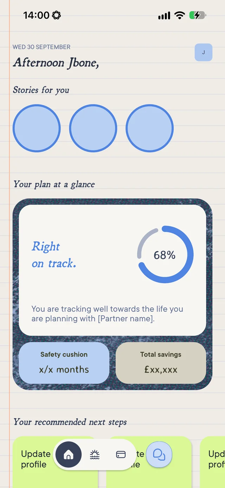
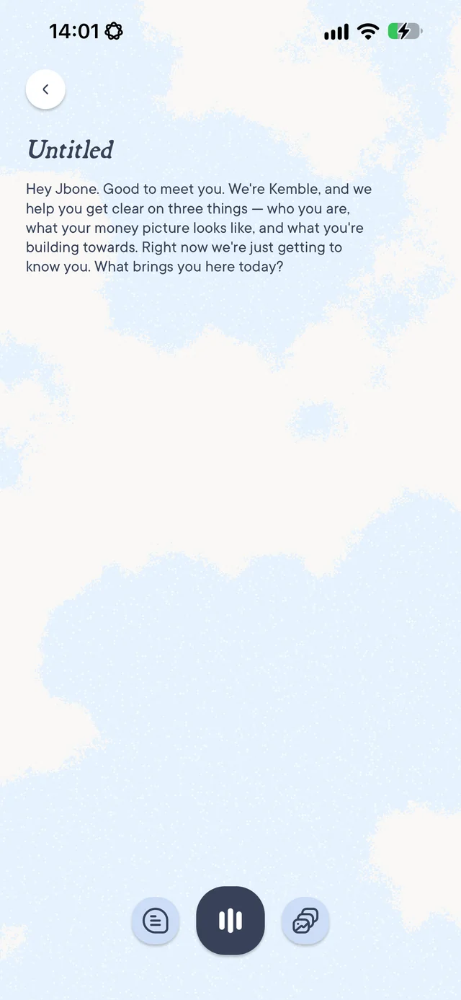
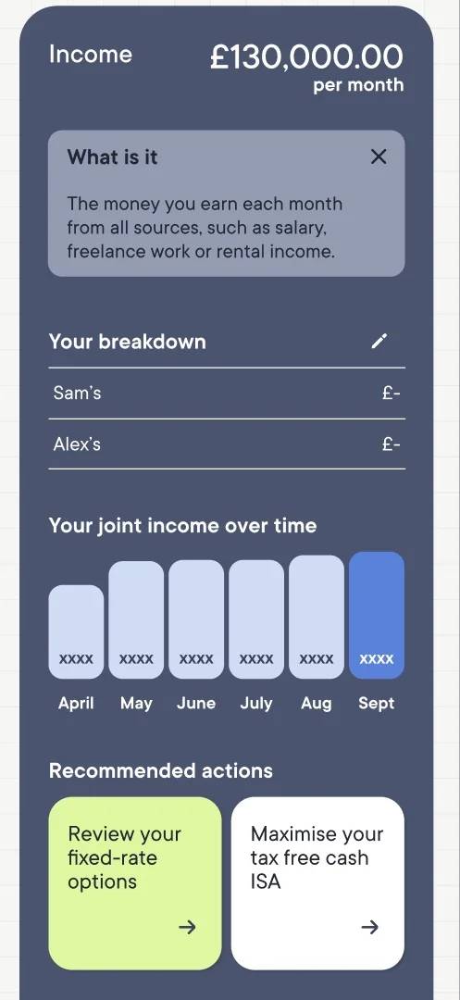

Case study · Aegon UK · 2025–now
Kemble: a life builder for a team of two.
Kemble is Aegon UK's AI-native app that helps couples design their future together, get a clear picture of their money, and get personalised action plans to reach their goals. As founding leader, I took it from concept to a live UK direct-to-consumer launch on iOS and Android in four months.



Product screens. Some show placeholder data.
The proposition
Every tool couples use to plan their life either looks backwards, doesn't act, or treats them as two separate people.
- Budgeting apps only show what has already happened.
- Lists and spreadsheets don't update themselves, and they don't act.
- One-off advisers have no ongoing context and put finance first.
- General LLMs don't know you both.
What Kemble is today
A life builder for a team of two. An app that helps couples design their future together, get a clear picture of their money, and get personalised action plans to reach their goals.
Where it's going
The one place that knows your whole life (your money, your health, your hopes) and holds it all together, so you and your family can live the life you actually want, with purpose and the security of never running out of money.
Three pillars
- 01Lay it outA live, always-accurate picture of each partner's needs, money and dreams, individually and together.
- 02Join forcesShared goals and decisions, built on a couples data model where each partner keeps their own account and joins through private-by-default "Spaces".
- 03Make it happenPersonalised next-best actions, and in time real actions inside the app, such as opening a savings pot or moving money towards a goal.
From beta to scale
A phased roadmap for going from someday to one day, where each phase earns the right to the next.
-
Phase 1
Beta
A life builder for a team of two.
A founding-couple beta of the full profile → dreams → money → actions flow, live on the App Store and Google Play.
-
Phase 2
Learn
Good enough for couples to use and stay.
Open Banking, new ways to put information in and get it out, a rebuilt My Money, in-app payments, a referral mechanic and a Kemble-owned architecture.
-
Phase 3
Prove
Will they stay, will they pay?
A scenario simulator, timeline views, proactive AI engagement and real actions in the app through FCA-regulated partners.
-
Phase 4
Amplify
Will it scale?
Put weight behind what's proven: the partnership pipeline, paid acquisition, and a commercial model built on subscription, referral and commission.
Measuring what matters
For a couples product, success isn't downloads. It's whether both partners come back, and whether they feel more in control. So we defined two ladders and built the roadmap around moving couples up both.
Engagement: L1–L5
Active-user states, instrumented in Amplitude on a 28-day rolling cycle.
- L1DormantHasn't experienced the core loop yet. The only goal is one completed session.
- L2EmergentPresent but not committed, and the partner seat is still empty. Partner activation is the biggest lever.
- L3ConsistentA habit is forming and both partners are active. Reinforce the weekly ritual.
- L4RegularSelf-initiated sessions and a shared plan being revised. The risk shifts from churn to plateau.
- L5Keen beanPulling in bank feeds, pensions and calendars, and taking actions through Kemble.
Confidence: C1–C5
Financial and emotional confidence, grounded in how couples described themselves in research.
- C1OverwhelmedDecision paralysis, avoiding the conversation.
We kind of put them off because they're difficult.
- C2TalkingOpen but unstructured, with no shared picture.
We keep having the same circular conversations.
- C3AlignedBoth partners see the same picture for the first time, so misalignment becomes visible and workable.
- C4PlanningConcrete goals and joint decisions. Money serves the life plan, not the other way round.
- C5ActingMoving, reviewing, adjusting.
You can kind of see how it could make it happen.
Building engagement and confidence together
The product strategy is defined by how couples move between these four states.
High engagement, growing confidence. Both partners are in, sessions are deepening, and the couple is levelling up in real time.
Where we earn our retention →High engagement, high confidence. Constant communication, daily relevance and financial action inside Kemble.
Where we move customersLow engagement, low confidence. Couples can't see clearly, and that stops them engaging.
Build trust; make them feel not alone ↗They commit to a plan, but the action happens elsewhere, so Kemble becomes a single-use tool.
Show them how effortless Kemble can be ↑Where the value is
Kemble knows a couple's context and their numbers. The Proactive AI work uses that to pull five levers, from a small nudge to a handover to a regulated adviser.
- The just-in-case essentialsLife insurance, wills, LPAs. Couples know they need them and never do them. High emotional friction, low complexity.
- The goals that have a name"Forever home by 2028", linked to the actions, products and services that get them there.
- The wins hiding in plain sightCouples' tax allowances, pension contribution gaps, childcare credits. Kemble just shows them the gap.
- The are-we-ready callsMortgage readiness, first investment. Kemble has the context to say "you're ready".
- The more complex actionsA contextual conversation with an embedded adviser when the complexity is beyond what Kemble can handle.
Five wealth cohorts
We mapped UK couple households into five cohorts by joint net worth, using ONS data, to be validated with real users. Each cohort gets different goals, actions and partners. The core audience is the squeezed middle.
- W1 Groundwork
- W2 Rising
- W3 Rooted
- W4 Settled
- W5 Flourishing
Platform & trust
Agentic platform
Built on AWS Bedrock (Claude): a conversational agent layer with defined AI personas and a governed brand voice, a single ranked insight and next-best-action pipeline, and a Partner Integration Layer for consent-scoped data exchange with Open Banking, orchestration and regulated-advice partners.
Hard questions, tested early
Technical spikes covered passing context between LLMs with session tokens users can revoke, household-level scoping for Open Banking (unusual for the category), and the information architecture for individuals versus households.
Compliance in the architecture
A regulated-advice classification gate (REDLine), DPIA, and FCA Consumer Duty and UK GDPR Article 22 analysis, all built in from day one rather than added on.
A couples data model
Each partner has their own account and joins through shared "Spaces", with private-by-default visibility and immutable ownership records to meet FCA requirements.
Next case study